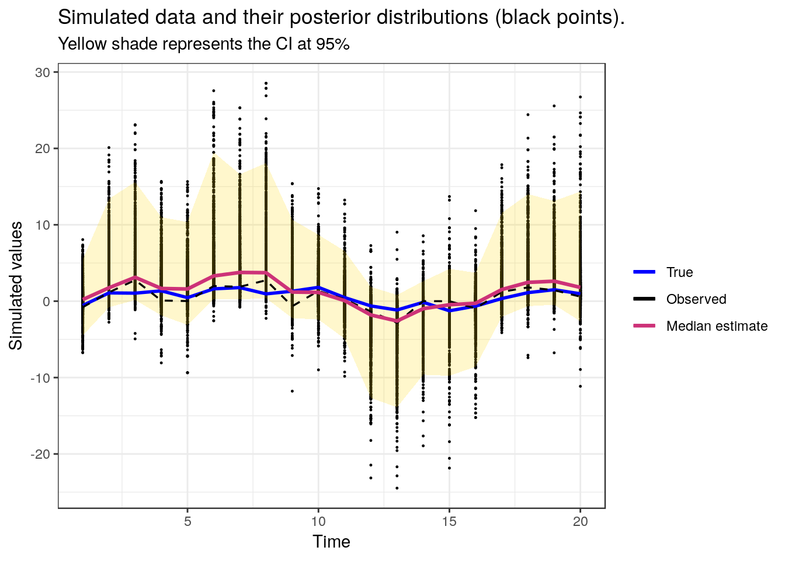
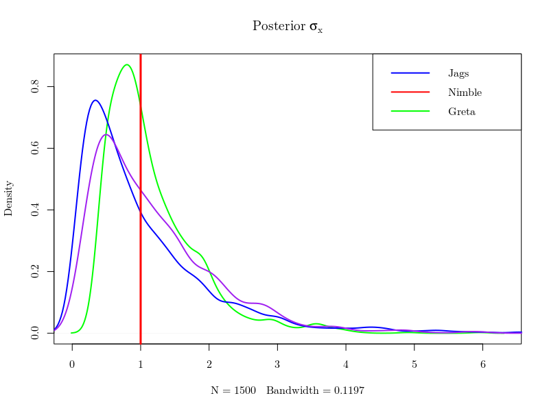
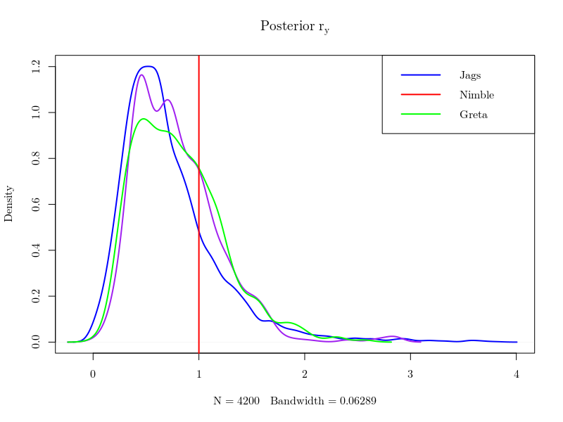

greta relies on TensorFlow and use efficient inference algorithms like Hamiltonian Monte Carlo. The main objective of greta is to provide a MCMC software like BUGS, JAGS or Stan. We can find on greta’s website the following definition:
The main advantage of greta is it builds statistical models interactively in R, and then sample from them by MCMC. There is no need to create a model object like in JAGS, Stan or nimble. However, greta creates specific objects (i.e. greta arrays) which are used to build the model and define the data to be used in the inference. greta is still is in its early development (version 0.2.3 on CRAN) and at this time there is a lack of documentation (especially compared with Stan, JAGS or nimble). We chose to test greta on a very easy and standard exemple. We further compare greta performances with other Bayesian inference tools : Jags, Nimble and Stan.
For now, greta is only using the Hamiltonian Monte Carlo algorithm, a most remarkable Markov chain Monte Carlo method for Bayesian inference. HMC reduces the correlation between successive sampled states by using properties from Hamiltonian dynamics see the nice paper from R.M. Neal on the topic. It allows larger moves between states at the cost of doubling the dimension of the state space and being able to efficiently compute the gradient of the logposterior density. This causes such an algorithm to converge more quickly to the targeted posterior probability distribution. There is a growing interest to implement HMC algorithms in the many Bayesian toolboxes.
greta use TensorFlow and it needs to be installed before installing greta.
install.packages('tensorflow')
install_tensorflow()greta also uses the DiagrammeR R package for plotting Directed Acyclic Graph of greta models.
install.packages('greta')
install.packages('DiagrammeR')The latent process \(X\) is assumed to be an independent random walk, which is a cumulative sum of a sequence of independent process errors \(\epsilon_x\).
\[X_{t} = \rho_x X_{t-1} + \epsilon_x \quad \text{with} \quad \epsilon_x \sim Normal(0, \sigma_x) \] The observation process \(Y\) is defined as: \[Y_{t} = \rho_y X_{t} + \epsilon_y \quad \text{with} \quad \epsilon_y \sim Normal(0, \sigma_y) \]
library('greta')
library('MASS')
library('tidyverse')
library('DiagrammeR')set.seed(123)
N <- 20 # number of time step
x_true <- rep(NA, N) # latent process
y <- rep(NA, N) # observations
# parameters
sd_x_true <- 1
prec_x_init_true <- sd_x_true^(-2)
sd_y_true <- 1
prec_y_true <- sd_y_true^(-2)
mean_x_init_true <- 0
r_x_true <- 0.85
r_y_true <- 1
### Process and data generation
x_true[1] <- rnorm(1, mean_x_init_true, sd_x_true)
y[1] <- rnorm(1, r_y_true*x_true[1], sd_y_true)
for (t in 2:N){
x_true[t] <- rnorm(1, r_x_true*x_true[t-1], sd_x_true)
y[t] <- rnorm(1, r_y_true*x_true[t], sd_y_true)
}The first step is to declare data for greta, assign priors to unknown parameters and provide distribution to random variables:
# greta's data
obs <- as_data(y)
# priors
r_y <- gamma(1, 1) # gamma prior set to r_y
sd_x <- inverse_gamma(1, 1) # inv-gamma prior set to sd_x
# fixed parameters
sd_y <- sd_y_true # parameter fixed to the true value
r_x <- r_x_true # parameter fixed to the true value
# creation of an empty greta array
epsilon_x <- normal(0, sd_x, dim = N)A prior gamma distribution is assigned to \(\rho_y\)
print(r_y)## greta array (variable following a gamma distribution)
##
## [,1]
## [1,] ?*_x* is an empty greta array
print(epsilon_x)## greta array (variable following a normal distribution)
##
## [,1]
## [1,] ?
## [2,] ?
## [3,] ?
## [4,] ?
## [5,] ?
## [6,] ?
## [7,] ?
## [8,] ?
## [9,] ?
## [10,] ?
## [11,] ?
## [12,] ?
## [13,] ?
## [14,] ?
## [15,] ?
## [16,] ?
## [17,] ?
## [18,] ?
## [19,] ?
## [20,] ?the same process is used to define the latent variable \(X\) for greta
# creation of an empty greta array for the X
X <- greta_array(data = 0, dim = c(N, 1))
# definition of the latent process interpreted by greta
for(t in 1:N){
X[t, 1] <- sum(r_x^((t - 1) - (0:(t-1))) * epsilon_x[1:t, 1])
}# definition of the distribution of the observation
distribution(obs) <- normal(X * r_y, rep(sd_y, N), dim = N)
# greta's model building
model_greta <- model(X, r_y, sd_x, precision = 'double')In this case study, greta faces numerical instability. The option precision = ’double of the model greta function redefines the model to have double precision and increase numerical stability, though this will slow down sampling. Once, the greta’s model is built, greta in combination with the DiagrammeR package can generate a DAG representing the greta’s model
plot(model_greta)DAG generated by greta
# run sampler for 1000 iterations
draws <- greta::mcmc(model_greta, n_samples = 1000)Results of draws are returned as an mcmc.list object and can be summarized with:
# print summary of mcmc.list
summary(draws)##
## Iterations = 1:1000
## Thinning interval = 1
## Number of chains = 1
## Sample size per chain = 1000
##
## 1. Empirical mean and standard deviation for each variable,
## plus standard error of the mean:
##
## Mean SD Naive SE Time-series SE
## X1 0.3733 2.1462 0.06787 0.15772
## X2 3.0768 3.6037 0.11396 1.25844
## X3 4.4626 4.1282 0.13055 1.07753
## X4 2.4568 3.1616 0.09998 0.35033
## X5 2.2760 3.1442 0.09943 0.33303
## X6 5.1728 5.0974 0.16119 1.45225
## X7 5.1343 4.4484 0.14067 0.93521
## X8 5.5734 5.0864 0.16085 1.63427
## X9 2.1392 3.1725 0.10032 0.30437
## X10 1.8550 2.7917 0.08828 0.21037
## X11 0.2762 2.6706 0.08445 0.19031
## X12 -2.8937 3.6834 0.11648 0.72436
## X13 -3.9724 4.0258 0.12731 0.70530
## X14 -1.7496 2.9809 0.09426 0.45316
## X15 -0.9563 3.2676 0.10333 0.25173
## X16 -0.6495 2.9168 0.09224 0.37437
## X17 2.4116 3.1900 0.10088 0.46407
## X18 3.6987 3.8315 0.12116 0.50926
## X19 3.8339 3.7879 0.11979 0.71358
## X20 2.7806 4.0137 0.12692 0.78119
## r_y 0.4706 0.3661 0.01158 0.05673
## sd_x 2.7788 2.1287 0.06731 0.80756
##
## 2. Quantiles for each variable:
##
## 2.5% 25% 50% 75% 97.5%
## X1 -4.50040 -0.6228 0.2112 1.31390 5.4583
## X2 -0.81292 0.7749 1.7493 4.29892 13.3899
## X3 0.15744 1.5189 3.1242 6.22269 15.6027
## X4 -1.86488 0.5150 1.6604 3.62041 10.9946
## X5 -3.10004 0.6474 1.5933 3.46203 10.3607
## X6 0.27236 1.7645 3.3061 7.13861 19.4925
## X7 0.22941 1.9474 3.7629 7.09277 16.6199
## X8 0.39509 1.9411 3.7288 7.31639 18.0841
## X9 -2.22085 0.2212 1.1963 3.39244 10.6713
## X10 -2.39083 0.2736 1.1509 3.05590 8.6918
## X11 -4.90656 -0.9998 0.0721 1.37473 6.5716
## X12 -12.66844 -4.3593 -1.8073 -0.61175 1.8752
## X13 -13.88930 -5.7624 -2.5929 -1.25314 0.8173
## X14 -9.63065 -2.9333 -0.9797 0.01484 2.6153
## X15 -9.77126 -1.7322 -0.4656 0.44309 4.2267
## X16 -8.57777 -1.3820 -0.2762 0.73185 3.7284
## X17 -2.04558 0.5351 1.5252 3.39879 11.5449
## X18 -0.66031 1.1807 2.4650 5.08484 14.0150
## X19 -0.46447 1.2499 2.6144 5.57447 13.1233
## X20 -2.62928 0.6870 1.8021 3.80186 14.3480
## r_y 0.09029 0.1914 0.3643 0.62026 1.4288
## sd_x 0.59143 1.1603 1.9813 3.97007 7.7680Using the tidyverse, a plot reprsenting simulated data, and posterior distributions is generated
### extract data from mcmc.list object to tibble for easy plotting with ggplot2
bounds <- as_tibble(t(apply(draws[[1]][, -c(21, 22)],2,function(x) quantile(x,c(0.025,0.5,0.975)))))
bounds$param <- 1:N
colnames(bounds)[1:3] <- c("min","med","max")
ggdraws <- as_tibble(draws[[1]][, -c(21, 22)]) %>%
gather(param, value) %>%
mutate(param = as.numeric(str_extract(param, "[0-9]+")))
true <- as_tibble(data.frame(X=x_true,param=1:20))
obs <- as_tibble(data.frame(Y=y,param=1:20))
data <- left_join(ggdraws,bounds,by="param")
data <- left_join(data,true,by="param")
data <- left_join(data,obs,by="param")
### generating plot
ggplot(data, aes(param, value)) +
geom_point(size = 0.2) +
geom_ribbon(aes(ymin = min, ymax = max), fill = "gold", alpha = 0.2) +
geom_line(aes(param, X, colour = "col1"), size = 1) +
geom_line(aes(param, Y, colour = "col2"), size = 0.6, linetype = "dashed") +
geom_line(aes(param, med, colour= "col3"), size = 1.1) +
scale_colour_manual(name = "",
values = c(col1 = "blue", col2 = "black", col3 = "violetred3"),
labels = c("True", "Observed", "Median estimate")) +
labs (x = "Time", y = "Simulated values") +
theme_bw() + ggtitle("Simulated data and their posterior distributions (black points).", subtitle = 'Yellow shade represents the CI at 95%')
Written in C++, Jags (Just another Gibbs sampler Just another Gibbs sampler ) is becomming the common tool for Bayesian newbies. Conversely to WinBUGS/OpenBUGS platform (BUGS) written in Pascal component and quasi-impossible to install on anything but Windows systems, Jags can be launched as a stand-alone routine from R whatever the operating system. It does not rely as greta on the recent Hamiltonian Monte algorithm to visit the space of the model’s unknowns ( and subsequently does not call Tensorflow as a quick routine to perform Hamiltonian dynamics). But Jags is known to work quite fast (since it is developped by Martyn Plummer, founding member of the Rcore team) and we’d wished to compare its performance to greta’s previous ones on this very simple linear Kalman filter example. A jag’s code treating the simple Kalman model would look like the following lines of code :
library(rjags)
burnSize <- 100
numberIter <- 1000
thin <- 1
params <- c('x', 'pres_x', 'r_y')
require(rjags)
jags.data <- list(y=y,N=N,prec_x_init=prec_x_init_true,prec_y=prec_y_true,
mean_x_init=mean_x_init_true,r_x = r_x_true)
init<- function(){
list(x=rnorm(N,y,0.2),r_y=rgamma(1,1,1),prec_x=rgamma(1,1,1))
}
modelstring="
model{
# Constants fixed (known) in the data
# N <- 20
# prec_x_init <- 1
# prec_y <- 1
# mean_x_init <- 0
# r_x <- 1
prec_x ~ dgamma(1,1)
r_y ~ dgamma(1,1)
# r_y ~ dnorm(0,1)I(0,)
x[1] ~ dnorm(mean_x_init, prec_x_init)
y[1] ~ dnorm(r_y*x[1], prec_y)
for (t in 2:N)
{
x[t] ~ dnorm(r_x*x[t-1], prec_x)
y[t] ~ dnorm(r_y*x[t], prec_y)
}
}
"
model=jags.model(textConnection(modelstring), data=jags.data, inits=init)## Compiling model graph
## Resolving undeclared variables
## Allocating nodes
## Graph information:
## Observed stochastic nodes: 20
## Unobserved stochastic nodes: 22
## Total graph size: 87
##
## Initializing model
##
##
|
| | 0%
|
|+ | 2%
|
|++ | 4%
|
|+++ | 6%
|
|++++ | 8%
|
|+++++ | 10%
|
|++++++ | 12%
|
|+++++++ | 14%
|
|++++++++ | 16%
|
|+++++++++ | 18%
|
|++++++++++ | 20%
|
|+++++++++++ | 22%
|
|++++++++++++ | 24%
|
|+++++++++++++ | 26%
|
|++++++++++++++ | 28%
|
|+++++++++++++++ | 30%
|
|++++++++++++++++ | 32%
|
|+++++++++++++++++ | 34%
|
|++++++++++++++++++ | 36%
|
|+++++++++++++++++++ | 38%
|
|++++++++++++++++++++ | 40%
|
|+++++++++++++++++++++ | 42%
|
|++++++++++++++++++++++ | 44%
|
|+++++++++++++++++++++++ | 46%
|
|++++++++++++++++++++++++ | 48%
|
|+++++++++++++++++++++++++ | 50%
|
|++++++++++++++++++++++++++ | 52%
|
|+++++++++++++++++++++++++++ | 54%
|
|++++++++++++++++++++++++++++ | 56%
|
|+++++++++++++++++++++++++++++ | 58%
|
|++++++++++++++++++++++++++++++ | 60%
|
|+++++++++++++++++++++++++++++++ | 62%
|
|++++++++++++++++++++++++++++++++ | 64%
|
|+++++++++++++++++++++++++++++++++ | 66%
|
|++++++++++++++++++++++++++++++++++ | 68%
|
|+++++++++++++++++++++++++++++++++++ | 70%
|
|++++++++++++++++++++++++++++++++++++ | 72%
|
|+++++++++++++++++++++++++++++++++++++ | 74%
|
|++++++++++++++++++++++++++++++++++++++ | 76%
|
|+++++++++++++++++++++++++++++++++++++++ | 78%
|
|++++++++++++++++++++++++++++++++++++++++ | 80%
|
|+++++++++++++++++++++++++++++++++++++++++ | 82%
|
|++++++++++++++++++++++++++++++++++++++++++ | 84%
|
|+++++++++++++++++++++++++++++++++++++++++++ | 86%
|
|++++++++++++++++++++++++++++++++++++++++++++ | 88%
|
|+++++++++++++++++++++++++++++++++++++++++++++ | 90%
|
|++++++++++++++++++++++++++++++++++++++++++++++ | 92%
|
|+++++++++++++++++++++++++++++++++++++++++++++++ | 94%
|
|++++++++++++++++++++++++++++++++++++++++++++++++ | 96%
|
|+++++++++++++++++++++++++++++++++++++++++++++++++ | 98%
|
|++++++++++++++++++++++++++++++++++++++++++++++++++| 100%t1 <- Sys.time()
update(model,n.iter=burnSize)##
|
| | 0%
|
|* | 2%
|
|** | 4%
|
|*** | 6%
|
|**** | 8%
|
|***** | 10%
|
|****** | 12%
|
|******* | 14%
|
|******** | 16%
|
|********* | 18%
|
|********** | 20%
|
|*********** | 22%
|
|************ | 24%
|
|************* | 26%
|
|************** | 28%
|
|*************** | 30%
|
|**************** | 32%
|
|***************** | 34%
|
|****************** | 36%
|
|******************* | 38%
|
|******************** | 40%
|
|********************* | 42%
|
|********************** | 44%
|
|*********************** | 46%
|
|************************ | 48%
|
|************************* | 50%
|
|************************** | 52%
|
|*************************** | 54%
|
|**************************** | 56%
|
|***************************** | 58%
|
|****************************** | 60%
|
|******************************* | 62%
|
|******************************** | 64%
|
|********************************* | 66%
|
|********************************** | 68%
|
|*********************************** | 70%
|
|************************************ | 72%
|
|************************************* | 74%
|
|************************************** | 76%
|
|*************************************** | 78%
|
|**************************************** | 80%
|
|***************************************** | 82%
|
|****************************************** | 84%
|
|******************************************* | 86%
|
|******************************************** | 88%
|
|********************************************* | 90%
|
|********************************************** | 92%
|
|*********************************************** | 94%
|
|************************************************ | 96%
|
|************************************************* | 98%
|
|**************************************************| 100%out=coda.samples(model=model,variable.names=params, n.iter=numberIter, thin=thin)## Warning in jags.samples(model, variable.names, n.iter, thin, type = "trace", : Failed to set trace monitor for pres_x
## Variable pres_x not found##
|
| | 0%
|
|* | 2%
|
|** | 4%
|
|*** | 6%
|
|**** | 8%
|
|***** | 10%
|
|****** | 12%
|
|******* | 14%
|
|******** | 16%
|
|********* | 18%
|
|********** | 20%
|
|*********** | 22%
|
|************ | 24%
|
|************* | 26%
|
|************** | 28%
|
|*************** | 30%
|
|**************** | 32%
|
|***************** | 34%
|
|****************** | 36%
|
|******************* | 38%
|
|******************** | 40%
|
|********************* | 42%
|
|********************** | 44%
|
|*********************** | 46%
|
|************************ | 48%
|
|************************* | 50%
|
|************************** | 52%
|
|*************************** | 54%
|
|**************************** | 56%
|
|***************************** | 58%
|
|****************************** | 60%
|
|******************************* | 62%
|
|******************************** | 64%
|
|********************************* | 66%
|
|********************************** | 68%
|
|*********************************** | 70%
|
|************************************ | 72%
|
|************************************* | 74%
|
|************************************** | 76%
|
|*************************************** | 78%
|
|**************************************** | 80%
|
|***************************************** | 82%
|
|****************************************** | 84%
|
|******************************************* | 86%
|
|******************************************** | 88%
|
|********************************************* | 90%
|
|********************************************** | 92%
|
|*********************************************** | 94%
|
|************************************************ | 96%
|
|************************************************* | 98%
|
|**************************************************| 100%tJags <- Sys.time() - t1
print(summary(out))##
## Iterations = 1101:2100
## Thinning interval = 1
## Number of chains = 1
## Sample size per chain = 1000
##
## 1. Empirical mean and standard deviation for each variable,
## plus standard error of the mean:
##
## Mean SD Naive SE Time-series SE
## r_y 0.575813 0.3362 0.01063 0.05843
## x[1] 0.136954 0.8477 0.02681 0.03449
## x[2] 1.844584 1.9550 0.06182 0.23155
## x[3] 3.047286 2.7198 0.08601 0.56005
## x[4] 1.897944 2.1687 0.06858 0.36966
## x[5] 1.848046 2.2865 0.07230 0.30554
## x[6] 2.986937 2.5870 0.08181 0.52525
## x[7] 3.317481 2.8487 0.09008 0.65734
## x[8] 3.247659 3.0651 0.09693 0.76437
## x[9] 1.191080 1.9371 0.06126 0.22303
## x[10] 1.220380 1.8785 0.05940 0.18263
## x[11] -0.006087 1.7566 0.05555 0.07095
## x[12] -1.667764 2.1573 0.06822 0.19640
## x[13] -2.665847 2.7907 0.08825 0.65235
## x[14] -1.099115 1.8673 0.05905 0.22544
## x[15] -0.289025 1.5896 0.05027 0.06088
## x[16] 0.024094 1.7168 0.05429 0.10018
## x[17] 1.791516 2.1153 0.06689 0.28013
## x[18] 2.720068 2.6158 0.08272 0.56445
## x[19] 2.549954 2.4543 0.07761 0.54337
## x[20] 1.838128 2.2505 0.07117 0.30201
##
## 2. Quantiles for each variable:
##
## 2.5% 25% 50% 75% 97.5%
## r_y 0.11018 0.3275 0.50881 0.77756 1.478
## x[1] -1.62338 -0.3670 0.13406 0.67397 1.831
## x[2] -0.79352 0.6836 1.46025 2.45338 7.005
## x[3] 0.06797 1.4563 2.35008 3.68132 10.404
## x[4] -1.00550 0.6432 1.46407 2.60132 7.678
## x[5] -1.31979 0.6135 1.45400 2.65907 7.725
## x[6] -0.22091 1.3760 2.43954 3.76556 10.085
## x[7] -0.03489 1.6774 2.55773 4.04184 11.947
## x[8] -0.16708 1.5592 2.52598 3.90856 13.016
## x[9] -1.53206 0.1167 0.91631 1.88513 6.697
## x[10] -1.64896 0.2192 0.87145 1.86952 6.046
## x[11] -3.38408 -0.7270 0.02327 0.73038 3.788
## x[12] -7.19012 -2.2485 -1.21246 -0.47906 1.342
## x[13] -10.84295 -3.3668 -1.87924 -1.10729 0.650
## x[14] -5.75139 -1.7380 -0.80523 -0.05479 1.790
## x[15] -3.78828 -1.0519 -0.25874 0.51900 2.891
## x[16] -3.44545 -0.7934 0.02308 0.80429 3.555
## x[17] -0.99351 0.5670 1.29617 2.49821 7.213
## x[18] -0.16358 1.1600 2.00201 3.35278 10.145
## x[19] -0.24026 1.0915 1.94641 3.30875 9.140
## x[20] -1.02330 0.5592 1.38766 2.53240 7.336NIMBLE (Numerical Inference for Statistical Models using Bayesian and Likelihood Estimation) is an competing R package developed by Perry De Valpine, Christopher Paciorek, Duncan Temple, and Daniel Turek . The package is designed to deal with hierarchical models and the many problems they raise. The NMBLE creators allow scientist to write their own blocks of the inference routine. The idea underpinning NIMBLE is to allow both a flexible model specification and a programming system that adapts to the model structure and gets compiled in C++. It recently incorporates Hamilton Monte Carlo algorithm within the many samplers that can be customized.
The authors of the R package Rstan have developed the No-U-Turn sampler, an adaptive form of Hamiltonian Monte Carlo sampling. Stan, now on a stabilized version, provides useful modern tools for Bayesian inference for continuous-variable models that are diffusing in a wide range of application domains.
The Stan package is rather tricky to implement and we do not compare its performances here.
The two unknown parameters of our exemple, \(\sigma_x\) and \(r_y\), are learnt from the data. Bayesian inference is simply getting the posterior of this couple \(\sigma_x,r_y\) and the latent variables \(X\) (i.e. saying what you know given the data). The same data having been passed to all toolboxes, with the same priors defined for \((\sigma_x,r_y)\), the obtained posteriors should not differ in theory. As they are given as samples, one can plot the marginal distributions of each quantities with the true instances that were used to generate the data and see that their posteriors look quite the same, as expected.
  However, MCMC algorithms yield different correlations in the sample of posterior values generated by the competing methods, which matters for the numerical precision of the estimates that can be derived from the various Monte Carlo Markov chains. The effective sample size (which can be computed using the coda package) is the size of an independent sample that would achieve the same precision. The following figure shows that greta provides the best effective sample size for all components of \(X\) and the two parameters \(\sigma_x\) and \(r_y\).
greta allows to perform inference with Hamiltonian Monte Carlo algorithm like Stan or nimble. Currently, the only implemented MCMC procedure in greta is static Hamiltonian Monte Carlo. In regards of our case study, greta give similar results than JAGS and nimble. However, its early version and the small amount of documentation do not allow (yet) the implementation of complex model. greta seems promising and its development is interesting to follow for users of MCMC software.